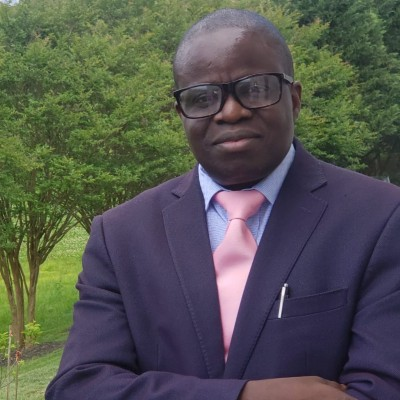

Profile
Assistant Professor, Department of Computer Science
Morgan State University
Dr. Oladunni directs the Pattern Recognition & Machine Learning Laboratory at Morgan State University. His research develops interpretable, theory-grounded AI for cardiac wellness and equitable healthcare, spanning Cardiac Stability Theory, multimodal ECG and PPG signal processing, explainable AI, and fairness-aware monitoring across diverse populations. He is Principal Investigator on an NIH Support for Research Excellence (SuRE) R16 award from the National Library of Medicine, previously led an NSF RAPID award on COVID-19 visualization and prediction, and is a Yale ASCEND Faculty Research Fellow.
Research funding from national agencies (NIH, NSF, NSA) supporting innovative AI and healthcare research.
Support for Research Excellence (SuRE) award advancing biomedical AI research at Morgan State University. Read the Morgan State announcement →
Collaborative research on visualization and prediction modeling of COVID-19 pandemic trends and impacts.
Support for building capacity in cybersecurity research and development through infrastructure and student training.
Selected as a Faculty Research Fellow through Yale's ASCEND Initiative, supporting advanced research in computational health, multimodal AI, and physiologic modeling. The fellowship strengthened cross-institutional collaboration and informed subsequent theoretical developments in representation stability and multimodal learning.
Featured for research contributions to advancing African American health in pandemic response.
Featured research on COVID-19 impact in the Black community, published by partner institutions.
Lightning talk at a COVID-19 research webinar on pandemic analysis and prediction.
Poster: Oladunni, T. "Automated Accent Recognition: A Machine Learning Investigation."